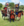

| 任务
|
完成条件
|
效果
|
前置任务
|
打破枷锁 我们伟大的国家处在土库曼黑羊王朝的压迫之下已经太久太久了。我们的人民被他们的统治无情蹂躏，以至于屈辱的枷锁沉重地套在我们的民族精神之中。是时候起来为独立而战，我们要打破束缚我们的枷锁了！
|
- 至少满足之一：
- Is independent or a tributary
- 全部：
- 是附属国
- 不是：
- 宗主国：
- 我国拥有至少
 +190观点对该国 +190观点对该国
|
- 所有省份位于亚美尼亚区域：
- 所有省份位于希尔凡区域：
- 所有省份位于阿塞拜疆区域：
- 如果：
- 仅限于：
- Is independent or a tributary
- Tooltip: 「
£yes£如果我们通过独立完成该任务，我们将获得：」
- The game displays a tooltip block without any actual effects in this place
- 否则：
- Tooltip: 「
£no£如果我们通过独立完成该任务，我们将获得：」
- The game displays a tooltip block without any actual effects in this place
- 如果：
- 仅限于：
- 是附属国
- 不是：
- 宗主国：
- 对 我国的观点至少为 +190
- Tooltip: 「£yes£如果我们完成该任务时是附庸，我们将获得：」
- The game displays a tooltip block without any actual effects in this place
- 否则：
- Tooltip: 「£no£如果我们作为完成该任务时是附庸，我们将获得：」
- The game displays a tooltip block without any actual effects in this place
- 潜在效果：
- 如果：
- 仅限于：
- Is independent or a tributary
- 若该国的稳定度小于 +3
- 则获得
 1 稳定度 1 稳定度
- 否则获得
 50 行政点数 50 行政点数
- 获得 100 行政点数
- 获得
 100 外交点数 100 外交点数
- 获得
 100 军事点数 100 军事点数
- 获得国家修正 「亚美尼亚复兴」 持续20年，并给予以下效果：
 −10% 侵略扩张影响 −10% 侵略扩张影响
- 否则，如果：
- 仅限于：
- 是附属国
- 不是：
- 宗主国：
- 对 我国的观点至少为 +190
- 失去
 50% liberty desire 50% liberty desire
|
|

里海财富 千余年来，里海作为贸易和文化交流的枢纽联系着东西南北，然而我们却长期以来被隔绝在利用其财富的大门之外。现在是时候让我们重新在里海海岸上取得我们应有的土地，并开发它所提供的丰富机遇了。 |
|
- 省份希尔凡 (421)：
- Create a
 level 1 center of trade level 1 center of trade
- 获得国家修正 「掌控里海财富」 持续15年，并给予以下效果：
 +10% 贸易效率 +10% 贸易效率
- 如果：
- 仅限于：
- Tooltip: 「£yes£如果我们通过控制波斯贸易节点内至少15.0%的贸易完成该任务，则这项修正的持续时间翻倍。」
- 否则：
- Tooltip: 「£no£如果我们通过控制波斯贸易节点内至少15.0%的贸易完成该任务，则这项修正的持续时间翻倍。」
- 潜在效果：
- 如果：
- 仅限于：
- 移除国家修正 「掌控里海财富」
- 获得国家修正 「掌控里海财富」 持续30年，并给予以下效果：
- +10% 贸易效率
|
 打破枷锁 打破枷锁
|

复兴使徒教会 在外国统治者数个世纪的铁蹄之下，亚美尼亚使徒教会一直是象征我国不屈信仰与精神的一杆旗帜。如今，国家的复兴将引领教会的复兴，是时候让我们的教会再次成为我们人民力量的支柱和精神的指引了。 |
- 至少 12 个拥有或非朝贡附属国拥有的省份满足以下条件：
- 如果：
- 仅限于：
- 存在
 教士阶层 教士阶层
- 教士阶层至少拥有 60 忠诚度
- Has completed at least 3 教士 agendas
|
- Tooltip: 「治下5个随机[Root.Religion.GetName]信仰省份将获得1£adm£发展度。」
- 获得国家修正 「教会复兴」 持续20年，并给予以下效果：
- 潜在效果：
- Repeat the following effects 5 times:
- 随机一个拥有的省份：
- 仅限于：
- 获得
 1 基础税收 1 基础税收
|
|
埃奇米阿津座堂 埃奇米阿津主教座堂是我国信仰与历史的灯塔，它傲然屹立于历次考验与磨难之中，见证了亚美尼亚人民的坚韧。然而，时间与冲突已经在这座神圣的丰碑身上留下了深深的伤疤。这座教堂渴望从头到尾的修缮，正如我们的国家亟待翻天覆地的复兴。
|
- 如果：
- 仅限于：
- DLC
 Leviathan已激活 Leviathan已激活
- 拥有省份埃里温 (419)
- 省份埃里温 (419)：
- 至少 5 个拥有或非朝贡附属国拥有的省份满足以下条件：
- 拥有以下的一种建筑：
 寺庙或 寺庙或  大教堂 大教堂
- 否则：
- 至少 10 个拥有或非朝贡附属国拥有的省份满足以下条件：
- 拥有以下的一种建筑： 寺庙或 大教堂
|
- Tooltip: 「将治下3个随机教堂升级为大教堂。」
- 获得国家修正 「重建埃奇米阿津主教座堂」 持续10年，并给予以下效果：
 +3 正统信仰容忍度 +3 正统信仰容忍度
- 获得等级 3
 审讯官顾问属于ROOT文化和ROOT（比正常价格低 75%) 审讯官顾问属于ROOT文化和ROOT（比正常价格低 75%)
- 潜在效果：
- Repeat the following effects 5 times:
- 随机一个拥有的省份：
- 仅限于：
- 拥有建筑 寺庙
- 移除 寺庙
- 建造 大教堂
|
复兴使徒教会
|
控制圣地 东方教会承受的冲突与征服已经太久太久。我们的圣地，从科普特正教会的中心亚历山大港，到基督教传统深厚的阿勒颇，都处在外国人的统治之下。我们有责任去夺回并保护这些神圣的土地。
|
- 如果：
- 仅限于：
- 宗教是
 科普特正教 科普特正教
- 至少有下述 3 项成立：
- 全部省份：
- 至少满足之一：
- 省份是亚历山大 (358)
- 省份是阿克苏姆 (1227)
- 省份是安条克 (2313)
- 省份是伊布里姆堡 (1234)
- 省份是埃里温 (419)
- 省份所有者：
- 宗教是 科普特正教
- 否则：
- 至少 10 个拥有或非朝贡附属国拥有的省份满足以下条件：
- 拥有以下的一种建筑： 寺庙或 大教堂
- 基础税收至少为 10
|
- 如果：
- 仅限于：
- 宗教是 科普特正教
- Tooltip: 「所有科普特国家获得「圣地守护者」，持续25年，给予以下效果：
传教强度：+1.5%
人力恢复速度：+10.0%
训练度：+2.5%
每年正统性：+0.50
核心化花费：-10.0%」
- 如果：
- 仅限于：
- 拥有省份亚历山大 (358)
- 拥有省份阿克苏姆 (1227)
- 拥有省份安条克 (2313)
- 拥有省份伊布里姆堡 (1234)
- 拥有省份埃里温 (419)
- Tooltip: 「
£yes£ 如果我们完成该任务时直接拥有所有科普特圣地，我们将永久获得该修正。」
- 否则：
- Tooltip: 「
£no£ 如果我们完成该任务时直接拥有所有科普特圣地，我们将永久获得该修正。」
- 否则：
- 获得国家修正 「正信之剑」 持续25年，并给予以下效果：
- （未识别的字符串“warscore cost vs other religion”用于
{{Icon}}） −10% 对其他宗教的战争分数花费
- （未识别的字符串“cb on religious enemies”用于Template:Icon） Gain permanent “Holy War” and “Purging of Heresy” Casus Belli against heathens and heretics respectively.
- 潜在效果：
- 如果：
- 仅限于：
- 宗教是 科普特正教
- 世界所有国家：
- 仅限于：
- 宗教是 科普特正教
- 获得国家修正 「圣地守护者」 持续25年，并给予以下效果：
- 如果：
- 仅限于：
- 拥有省份亚历山大 (358)
- 拥有省份阿克苏姆 (1227)
- 拥有省份安条克 (2313)
- 拥有省份伊布里姆堡 (1234)
- 拥有省份埃里温 (419)
- 移除国家修正 「圣地守护者」
- 获得国家修正 「圣地守护者」 持续至游戏结束，并给予以下效果：
|
埃奇米阿津座堂
|

改进纳哈拉尔体制 纳哈拉尔体系，亦即宗长制度，作为一套久经历史考验的、构成了我们社会的骨架的封建制度，需要改进以满足我国发展中不断变化的需求。作为贵族封建领主，我们的纳哈拉尔宗长不应仅仅作为地方的豪强，而是应该成为一个强大中央集权国家的顶梁柱，将共同利益与他们的个人利益同等地重视起来。 |
- 如果：
- 仅限于：
- 存在
 贵族阶层 贵族阶层
- 至少满足之一：
- 贵族阶层至少拥有 60 忠诚度
- The 贵族 estate has at least 4 privileges
- Has completed at least 3 贵族 agendas
- 否则：
- 至少满足之一：
- 统治者的 军事能力至少为 5
- 获得至少
 10 军事点数每月 10 军事点数每月
|
- Tooltip: 「每项赋予贵族的特权给予我们25£mil£，最多100£mil£。」
- 设置国家 flag arm_unlocked_nakharar
- 解锁「纳哈拉尔体制」政府改革
- 潜在效果：
- 如果：
- 仅限于：
- The 贵族 estate has at least 4 privileges
- 获得 100 军事点数
- 否则，如果：
- 仅限于：
- The 贵族 estate has at least 3 privileges
- 获得 75 军事点数
- 否则，如果：
- 仅限于：
- The 贵族 estate has at least 2 privileges
- 获得 50 军事点数
- 否则，如果：
- 仅限于：
- The 贵族 estate has at least 1 privileges
- 获得 25 军事点数
|
|
大元帅府署 斯帕拉佩，即我国陆军的最高军事统帅，他的府署彰显了我国的尚武传统和坚韧精神。立足新时代边缘的当下，我们必须重设这个显赫的职位，从而引领我们的军队和国家再创新的辉煌。
|
- 至少满足之一：
 陆军传统至少为 60 陆军传统至少为 60 陆军职业度至少为 30% 陆军职业度至少为 30%
- 获得至少 10 军事点数每月
- 已聘请任意至少为 军事 级的 军事顾问3
|
- 设置国家 flag arm_unlocked_sparapet
- 解锁「大元帅府署」政府改革
|
 改进纳哈拉尔体制
|


{kind=link}